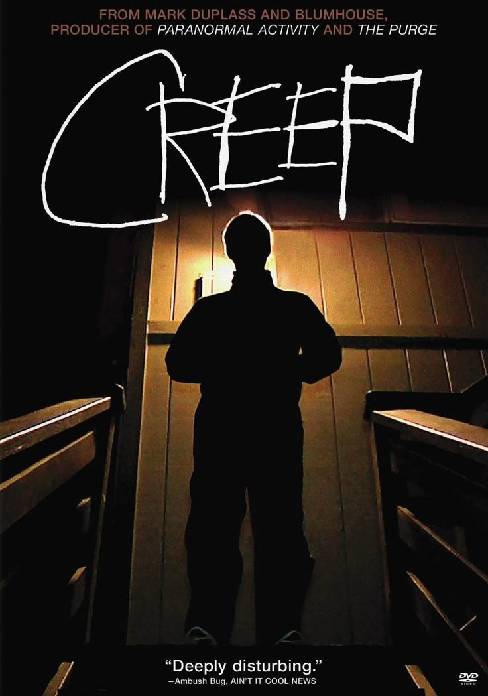

Bienvenidos a mi pág sobre la canción Creep de Radiohead

Un clasico e himno
Sobre Creep
Trata sobre una de las más famosas canciones de creep de radiohead
Caractéristicas
Habla de la marginación social, la autocompasión, la miseria emocional y el sentimiento de no ser suficiente frente a alguien considerado inalcanzable.
Se puede referir CREEP como una persona, una canción o una película.
Destaca por su famosa progresión de acordes y el cambio explosivo entre las estrofas suaves y los fuertes
Es un himno de la Generación X,
El golpe de Johnny Greenwood
Información Importante
Es el sencillo debut de la banda británica Radiohead
Thom Yorke, cuando era estudiante en la Universidad de Exeter la compuso
Fue un exito global masivo
Habian similitudes melódicas con la canción "The Air That I Breathe" de The Hollies.
Radiohead se llamaba originalmente On a Friday porque ensayaban exclusivamente los viernes, pero la discográfica Parlophone les pidió cambiar de nombre y se inspiraron en la canción «Radio Head» de la banda Talking Heads.
Un dato curioso esque Phil Selway y Jonny Greenwood aparecieron como miembros de la banda de magos The Weird Sisters (Las Brujas de Weird) en la película Harry Potter y el cáliz de fuego.
MI OPINIÓN
Bueno yo elegi este tema porque me encanta esta canción y sus sube y baja de los tonos y los estruendos de la guitarra, me recuerda a mi hermano que en paz descanse y aprendi que Radihead y más que nada el creador de la canción creep pasaron por mucho para llegar a esa obra de arte.